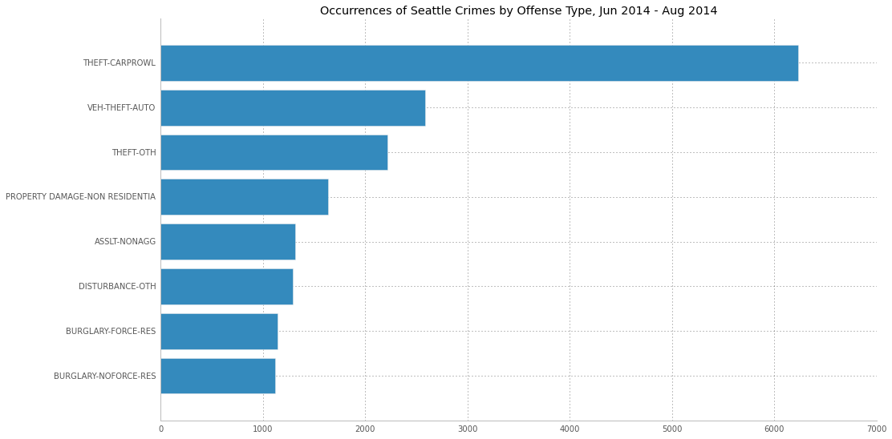
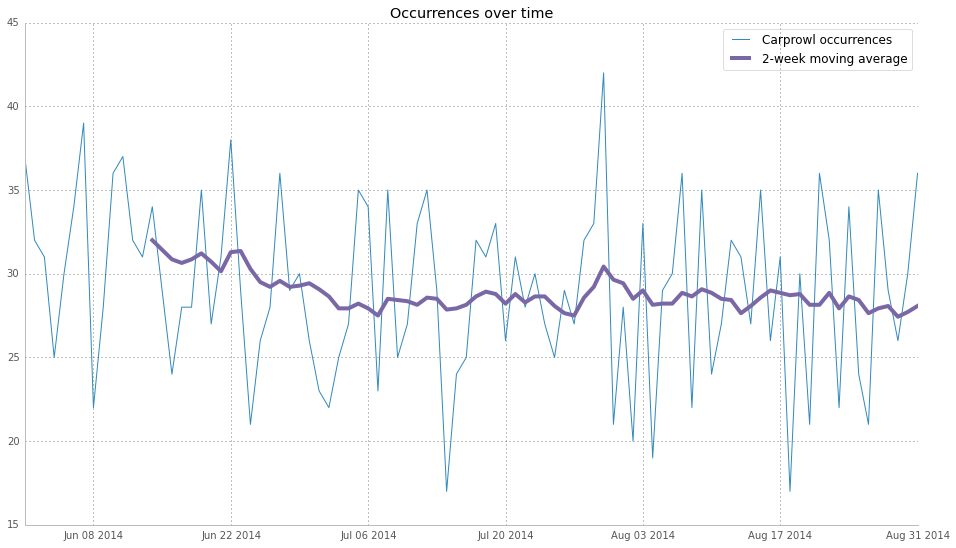
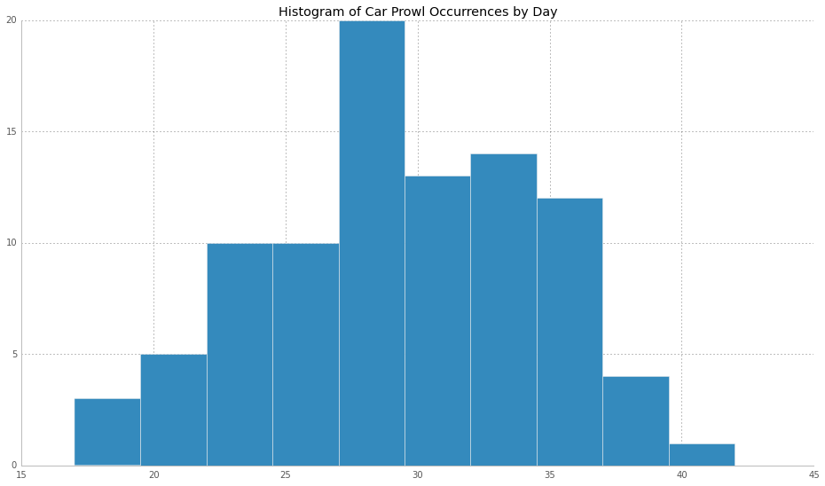
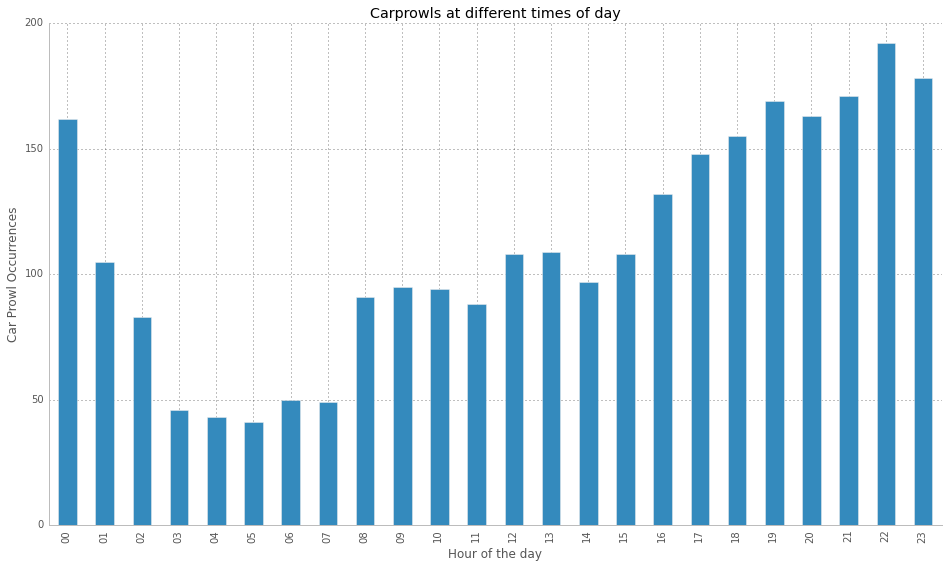

Using data provided in a Coursera course on data visualization, available here , I've made some discoveries about a common crime in Seattle: "car prowls". It turns out that Car Prowls is not the name of a hockey team as you might expect, but rather the term refers to the crime of breaking into a vehicle and stealing it's contents, and it's a very persistent problem for Seattle.
*Note: The code for the following study can be found in this iPython notebook
Why focus on carprowls? Because according to the data, it's the most common offense in Seattle by far, beating out the next closest offense, which is actually stealing the car itself. The chart below shows the number of occurrences reported according to the internal label the Seattle department uses to classify the crime.
The following graphics show the number of carprowls reported each day during the summer of 2014. Though there is some day-to-day variance in the number of incidents reported, the overall level is consistent. The average number of daily incidents is 29, with a standard deviation of 5 (this means that on average, 2 out of 3 days had somewhere between 24 and 34 incidents reported). The two week moving average shows a possible downward trend from June into the remainder of the summer, but otherwise the problem appears to be consistent.
 If we look at reported incidents according to the hour of the day, we see a notable rise in incidents during the afternoon and evening hours. Note that this is the hour in which the crime is reported, which could differ from the hour in which the crime took place. This may explain the sudden drop-off of incidences after midnight: cars are being robbed while the owners are asleep. An alternative explanation for the dip is the assumption that these early morning hours are when there are simply less cars in public spaces.
